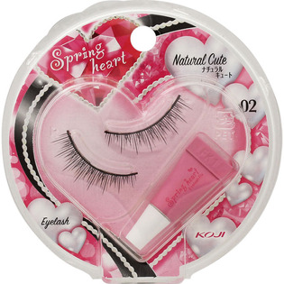

返回列表
产品名称：スプリングハート アイラッシュ 02ナチュラルキュート

コージー本舗 スプリングハート アイラッシュ 02ナチュラルキュート ＿
メーカー コージー本舗
JANコード 4972915013528
商品の特徴
アイライン効果：●●●
長さ：●●○
濃さ：●●○
- 成分・分量
- 【主成分】
○専用接着剤
天然ゴムラテックス
- 用法及び用量
- 【使用方法】
○アイラッシュの上手なつけ方
目になじみやすくするため１０回程度曲げ伸ばしをします。
自分の目幅より２～３ｍｍ短くなるようにカット。根元に均一にフィックスを塗ります。
まつげの生え際ギリギリにのせます。自分のまつげは先にカールさせておきます。
目の中央、目頭、目尻の順で軽く押さえます。